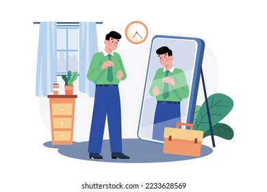
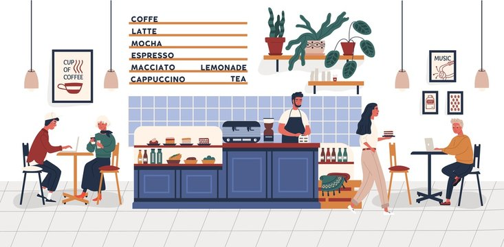
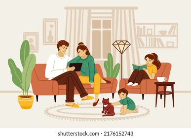

01 / BEGINNING
Getting ready
You get ready to head out.
THREE PHOTOS, TWO STORIES
Same photos, different order. Does the story change?
STORY 01
Getting ready, catching up with a friend, and heading home.

You get ready to head out.

You meet a friend and have a great time.

You get home feeling happy and relaxed.
THINK ABOUT IT
Nothing about the photos has changed. Only their order. How does that affect the way you see the day?